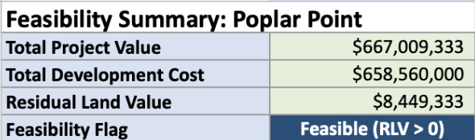
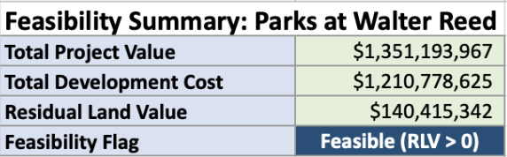
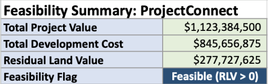

With significant portions of land devoted to risky retail and hospitality space, as well as office space in the current capital market, this proposal presents a risky and low ROI project without essential context or investment. Poplar Point checks all the boxes: equity-based reinvestment, catalytic impact, regional anchor, and significant potential for value growth.

With a significant residential use to anchor it, supplemented by numerous retail, hospitality, and office uses to diversify it's portfolio, this project is relatively low-risk and high-profit. The Parks at Walter Reed is an essential investment in a neighborhood in need of it, but lacks urgency and regional draw.

With strong private investment, transit-oriented support, and stable land uses, this project makes the most financial sense. Project Connect has strong institutional support from Bethesda, WMATA, and the University of Maryland.

While Poplar Point does not generate the largest revenue, all of these projects are feasible and will generate profit from pursuing. The question remains therefore whether the additional profit of ProjectConnect or The Parks at Walter Reed is greater than the significant long-term investment benefits offered by Poplar Point. With the bonus to legacy and equity, support from local jurisdictions, and ability to spark catalytic invesment to gain potentially exponential returns, Poplar Point must be considered the prime investment opportunity.